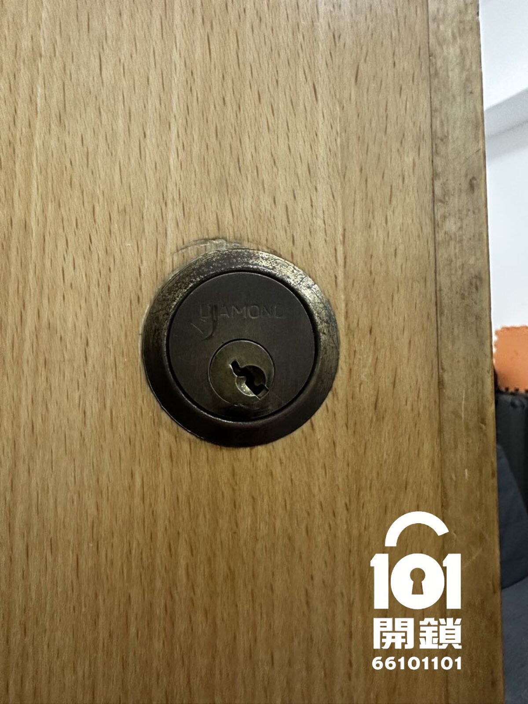
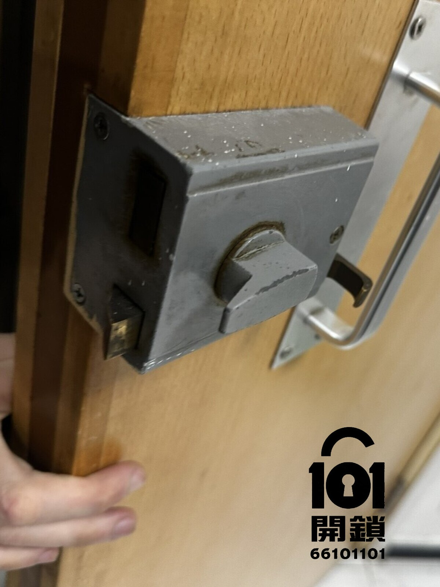

灣仔區・灣仔・Diamond木門三開鎖
灣仔木門緊急開鎖案例｜Diamond木門三開鎖技術開鎖
客人住宅木門使用 Diamond 木門三開鎖，因急需入屋而聯絡 101開鎖安排緊急開鎖。客人透過WhatsApp提供門鎖相片和所在地區後，101開鎖先按鎖種及情況初步報價，再安排師傅上門以技術開鎖方式 pick 開。
即撥 66 101 101WhatsApp 查詢
客人搵開鎖原因
客人因緊急情況需要開啟住宅木門，門鎖為 Diamond 牌子。由於現場需要盡快入屋，客人不希望自行撬門或強行處理，避免整花木門、損壞鎖膽或令門鎖情況更複雜，因此聯絡101開鎖安排師傅到場。
客人主要顧慮
客人最擔心木門被破壞、門鎖要即時更換，或者開鎖後原有鎖匙不能再用。師傅先檢查 Diamond 木門三開鎖結構和鎖芯狀態，確認適合技術開鎖後，以 pick 開方式處理並保留原有門鎖。
到場檢查與處理方法
師傅到場後先確認門鎖型號、門縫狀態和鎖舌受壓情況，再使用專用工具進行技術開鎖。今次以 pick 開方式成功開啟木門，過程沒有破壞門身及原有鎖膽；現場完成測試後，向客人交代門鎖狀態及後續保養方法。
完成後測試
開門後，師傅會反覆測試開門、關門、上鎖、反鎖和原鎖匙操作，確認 Diamond 木門三開鎖仍可正常使用。若門框或鎖舌受壓，亦會提醒客人留意關門力度及後續保養。
完成後室內及室外照片
以下為 Diamond 木門三開鎖緊急開鎖完成後記錄，展示室內及室外門鎖狀態。門身及原有鎖膽沒有被破壞，完成後已測試開關、上鎖及反鎖。

完成後室內照片

完成後室外照片
101開鎖保養建議
木門緊急開鎖時，建議先發送門鎖相片、門邊位置和現場情況，讓師傅判斷技術開鎖方法。門鎖完成測試後可正常運作，無需即時更換；如日後出現卡匙、空轉或鎖舌回彈慢，就應盡早檢查。